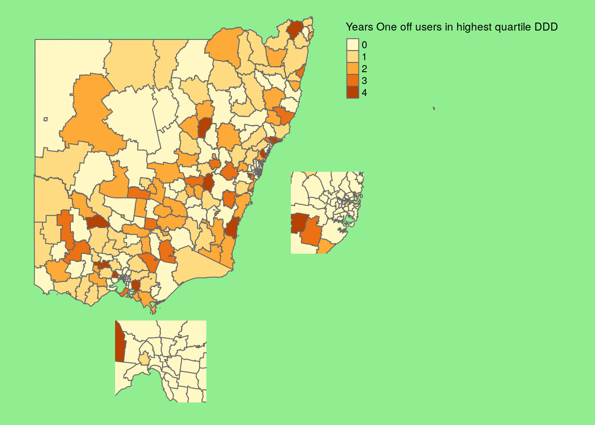

Last updated: 2018-08-07
workflowr checks: (Click a bullet for more information) ✖ R Markdown file: uncommitted changes
The R Markdown file has unstaged changes. To know which version of the R Markdown file created these results, you’ll want to first commit it to the Git repo. If you’re still working on the analysis, you can ignore this warning. When you’re finished, you can run wflow_publish to commit the R Markdown file and build the HTML.
✔ Environment: empty
Great job! The global environment was empty. Objects defined in the global environment can affect the analysis in your R Markdown file in unknown ways. For reproduciblity it’s best to always run the code in an empty environment.
✔ Seed:
set.seed(20180713)
The command set.seed(20180713) was run prior to running the code in the R Markdown file. Setting a seed ensures that any results that rely on randomness, e.g. subsampling or permutations, are reproducible.
✔ Session information: recorded
Great job! Recording the operating system, R version, and package versions is critical for reproducibility.
✔ Repository version: beedc36
wflow_publish or wflow_git_commit). workflowr only checks the R Markdown file, but you know if there are other scripts or data files that it depends on. Below is the status of the Git repository when the results were generated:
Ignored files:
Ignored: analysis/.Rhistory
Ignored: analysis/hypothesis1_cache/
Ignored: cache/
Ignored: docs/figure/
Untracked files:
Untracked: data/doses.csv
Untracked: data/pop.csv
Unstaged changes:
Modified: analysis/hypothesis3.Rmd
| File | Version | Author | Date | Message |
|---|---|---|---|---|
| Rmd | 96ee79d | Dennis Wollersheim | 2018-07-15 | initial setup, added keyring, not working |
Loading required package: wraprLoading required package: data.table
Attaching package: 'data.table'The following object is masked from 'package:wrapr':
:=Loading required package: seasLoading required package: MASSLoading required package: magrittrLoading required package: stringrLoading required package: broomLoading required package: knitrLoading required package: kableExtraLoading required package: panderLoading required package: lubridate
Attaching package: 'lubridate'The following objects are masked from 'package:data.table':
hour, isoweek, mday, minute, month, quarter, second, wday, week, yday, yearThe following object is masked from 'package:base':
dateLoading required package: tmapLoading required package: tmaptoolsLoading required package: gridLoading required package: readstata13Loading required package: foreignLoading required package: ordinalLoading required package: DataCache
Attaching package: 'DataCache'The following object is masked from 'package:lubridate':
nowLoading required package: shiny
Attaching package: 'shiny'The following object is masked from 'package:pander':
pLoading required package: tidyverse── Attaching packages ─────────────────────────────────────────────────────────────────────────────────────────────────────────────────────────────────────────────────────────────── tidyverse 1.2.1 ──✔ ggplot2 2.2.1 ✔ readr 1.1.1
✔ tibble 1.4.2 ✔ purrr 0.2.5
✔ tidyr 0.8.1 ✔ dplyr 0.7.6
✔ ggplot2 2.2.1 ✔ forcats 0.3.0── Conflicts ────────────────────────────────────────────────────────────────────────────────────────────────────────────────────────────────────────────────────────────────── tidyverse_conflicts() ──
✖ lubridate::as.difftime() masks base::as.difftime()
✖ dplyr::between() masks data.table::between()
✖ dplyr::coalesce() masks wrapr::coalesce()
✖ lubridate::date() masks base::date()
✖ tidyr::extract() masks magrittr::extract()
✖ dplyr::filter() masks stats::filter()
✖ dplyr::first() masks data.table::first()
✖ lubridate::hour() masks data.table::hour()
✖ lubridate::intersect() masks base::intersect()
✖ lubridate::isoweek() masks data.table::isoweek()
✖ dplyr::lag() masks stats::lag()
✖ dplyr::last() masks data.table::last()
✖ lubridate::mday() masks data.table::mday()
✖ lubridate::minute() masks data.table::minute()
✖ lubridate::month() masks data.table::month()
✖ DataCache::now() masks lubridate::now()
✖ lubridate::quarter() masks data.table::quarter()
✖ lubridate::second() masks data.table::second()
✖ dplyr::select() masks MASS::select()
✖ purrr::set_names() masks magrittr::set_names()
✖ lubridate::setdiff() masks base::setdiff()
✖ dplyr::slice() masks ordinal::slice()
✖ purrr::transpose() masks data.table::transpose()
✖ lubridate::union() masks base::union()
✖ lubridate::wday() masks data.table::wday()
✖ lubridate::week() masks data.table::week()
✖ lubridate::yday() masks data.table::yday()
✖ lubridate::year() masks data.table::year()Loading required package: RPostgreSQLLoading required package: DBILoading required package: keyringLoading more recent data, returning lastest available.Patients who were dispensed at least in 15 quarters were identified as regular users. Patients who were dispensed at least in 9 quarters were identified as long-term users. Patients who were dispensed 1-8 quarters were identified as short-term users. Patients who were dispensed just one occasion only were identified as one off users.
# A tibble: 40 x 4
# Groups: age, sex [?]
age sex supply_year population
<fct> <fct> <fct> <dbl>
1 0-19 F 2012 2798785
2 0-19 F 2013 2835371
3 0-19 F 2014 2866581
4 0-19 F 2015 2891945
5 0-19 F 2016 2925838
6 0-19 M 2012 2953661
7 0-19 M 2013 2994316
8 0-19 M 2014 3027896
9 0-19 M 2015 3051298
10 0-19 M 2016 3088422
# ... with 30 more rowsJoining, by = "pin"
Joining, by = "pin"Warning: Column `lga` joining character vector and factor, coercing into character vectorWarning: Column `supply_year` joining factors with different levels, coercing to character vectorWarning: Column `supply_year` joining character vector and factor, coercing into character vector
Warning: Column `supply_year` joining character vector and factor, coercing into character vectorJoining, by = "pin"
Joining, by = "pin"Warning: Column `supply_year` joining factors with different levels, coercing to character vector
Warning: Column `supply_year` joining character vector and factor, coercing into character vector
Warning: Column `supply_year` joining character vector and factor, coercing into character vectorJoining, by = "pin"
Joining, by = "pin"Warning: Column `supply_year` joining factors with different levels, coercing to character vector
Warning: Column `supply_year` joining character vector and factor, coercing into character vector
Warning: Column `supply_year` joining character vector and factor, coercing into character vectorKeys match perfectly.Linking to GEOS 3.5.1, GDAL 2.2.1, proj.4 4.9.3Warning in save_tmap(map, paste0("/tmp/", name, ".png")): save_tmap is deprecated as of tmap version 2.0. Please use tmap_save insteadMap saved to /tmp/regular.pngResolution: 2100 by 1500 pixelsSize: 7 by 5 inches (300 dpi)Keys match perfectly.Warning in save_tmap(map, paste0("/tmp/", name, ".png")): save_tmap is deprecated as of tmap version 2.0. Please use tmap_save insteadMap saved to /tmp/long term.pngResolution: 2100 by 1500 pixelsSize: 7 by 5 inches (300 dpi)Keys match perfectly.Warning in save_tmap(map, paste0("/tmp/", name, ".png")): save_tmap is deprecated as of tmap version 2.0. Please use tmap_save insteadMap saved to /tmp/Short term.pngResolution: 2100 by 1500 pixelsSize: 7 by 5 inches (300 dpi)Keys match perfectly.Warning in save_tmap(map, paste0("/tmp/", name, ".png")): save_tmap is deprecated as of tmap version 2.0. Please use tmap_save insteadMap saved to /tmp/One off.pngResolution: 2100 by 1500 pixelsSize: 7 by 5 inches (300 dpi)
sessionInfo()R version 3.4.4 (2018-03-15)
Platform: x86_64-pc-linux-gnu (64-bit)
Running under: Ubuntu 17.10
Matrix products: default
BLAS: /usr/lib/x86_64-linux-gnu/openblas/libblas.so.3
LAPACK: /usr/lib/x86_64-linux-gnu/libopenblasp-r0.2.20.so
locale:
[1] LC_CTYPE=en_AU.UTF-8 LC_NUMERIC=C LC_TIME=en_AU.UTF-8 LC_COLLATE=en_AU.UTF-8 LC_MONETARY=en_AU.UTF-8 LC_MESSAGES=en_AU.UTF-8 LC_PAPER=en_AU.UTF-8
[8] LC_NAME=C LC_ADDRESS=C LC_TELEPHONE=C LC_MEASUREMENT=en_AU.UTF-8 LC_IDENTIFICATION=C
attached base packages:
[1] grid stats graphics grDevices utils datasets methods base
other attached packages:
[1] sf_0.6-3 bindrcpp_0.2.2 keyring_1.1.0 RPostgreSQL_0.6-2 DBI_1.0.0 forcats_0.3.0 dplyr_0.7.6 purrr_0.2.5 readr_1.1.1 tidyr_0.8.1
[11] tibble_1.4.2 ggplot2_2.2.1 tidyverse_1.2.1 shiny_1.1.0 DataCache_0.9 ordinal_2018.4-19 foreign_0.8-70 readstata13_0.9.2 tmaptools_2.0 tmap_2.0
[21] lubridate_1.7.4 pander_0.6.2 kableExtra_0.9.0 knitr_1.20 broom_0.5.0 stringr_1.3.1 magrittr_1.5 seas_0.5-2 MASS_7.3-50 data.table_1.11.4
[31] wrapr_1.5.1 nvimcom_0.9-72
loaded via a namespace (and not attached):
[1] colorspace_1.3-2 class_7.3-14 gdalUtils_2.0.1.14 leaflet_2.0.1 rgdal_1.3-3 rprojroot_1.3-2 satellite_1.0.1 base64enc_0.1-3 dichromat_2.0-0 rstudioapi_0.7
[11] fansi_0.2.3 xml2_1.2.0 codetools_0.2-15 R.methodsS3_1.7.1 jsonlite_1.5 workflowr_1.1.1 png_0.1-7 R.oo_1.22.0 rgeos_0.3-28 compiler_3.4.4
[21] httr_1.3.1 backports_1.1.2 mapview_2.4.0 assertthat_0.2.0 Matrix_1.2-14 lazyeval_0.2.1 cli_1.0.0 later_0.7.3 htmltools_0.3.6 tools_3.4.4
[31] gtable_0.2.0 glue_1.3.0 Rcpp_0.12.17 cellranger_1.1.0 raster_2.6-7 nlme_3.1-137 iterators_1.0.10 crosstalk_1.0.0 lwgeom_0.1-4 rvest_0.3.2
[41] mime_0.5 XML_3.98-1.12 scales_0.5.0 hms_0.4.2 promises_1.0.1 parallel_3.4.4 RColorBrewer_1.1-2 yaml_2.1.19 stringi_1.2.3 ucminf_1.1-4
[51] foreach_1.4.4 e1071_1.6-8 spData_0.2.9.0 rlang_0.2.1 pkgconfig_2.0.1 evaluate_0.10.1 lattice_0.20-35 bindr_0.1.1 htmlwidgets_1.2 tidyselect_0.2.4
[61] plyr_1.8.4 R6_2.2.2 pillar_1.3.0 haven_1.1.2 whisker_0.3-2 units_0.6-0 sp_1.3-1 modelr_0.1.2 crayon_1.3.4 KernSmooth_2.23-15
[71] utf8_1.1.4 rmarkdown_1.10 readxl_1.1.0 git2r_0.23.0 digest_0.6.15 classInt_0.2-3 webshot_0.5.0 xtable_1.8-2 httpuv_1.4.5 R.utils_2.6.0
[81] stats4_3.4.4 munsell_0.5.0 viridisLite_0.3.0 This reproducible R Markdown analysis was created with workflowr 1.1.1